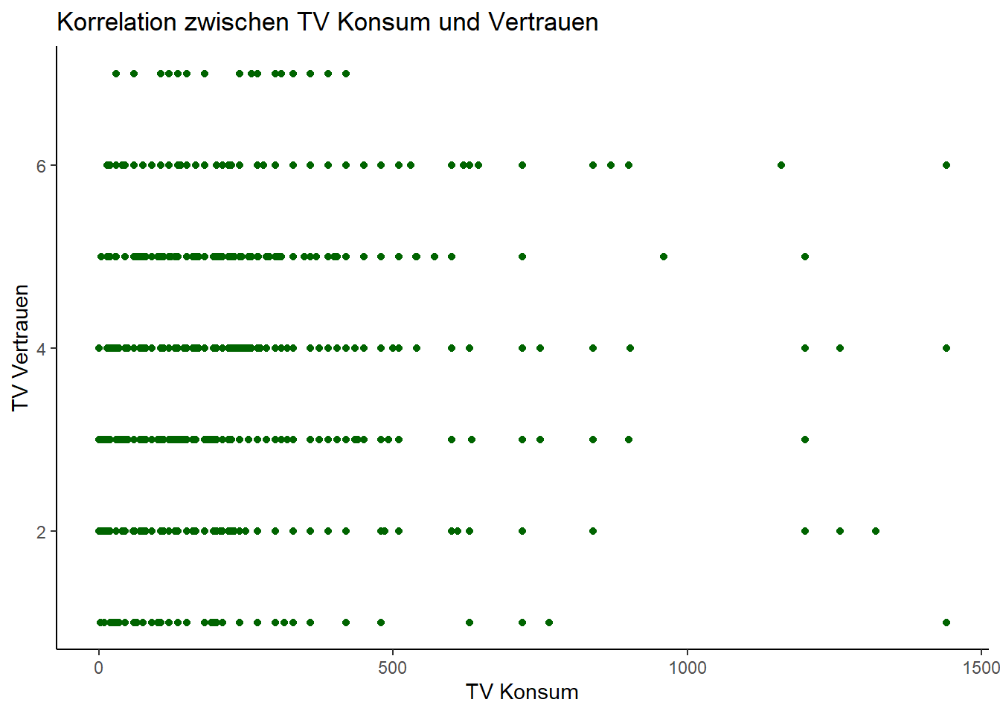
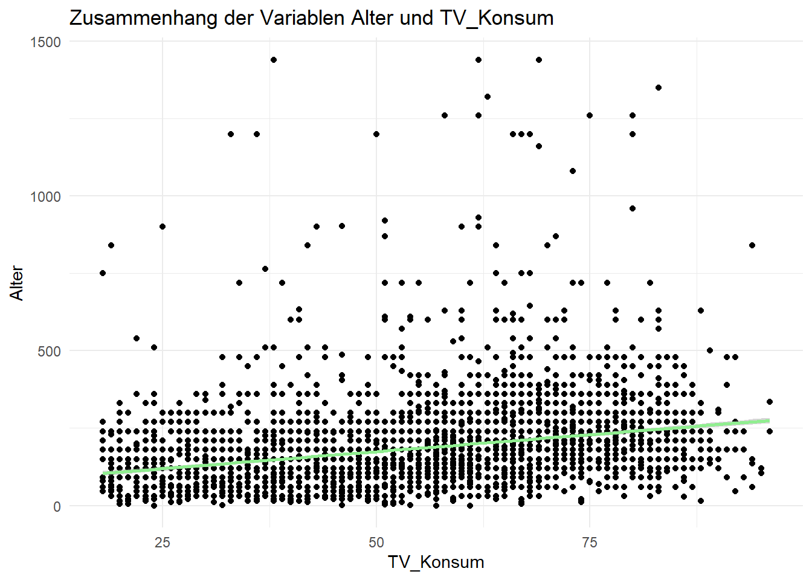

Korrelation & Regression
Zur Analyse von Zusammenhängen bei zwei metrischen Variablen gibt es verschiedene statistische Verfahren. In diesem Teilkapitel schauen wir uns die Korrelationsanalyse sowie die einfache lineare Regression an.
1 Die Korrelationsanalyse
Die Korrelationsanalyse ist eine schnelle und einfache statistische Methode, um den Zusammenhang zwischen zwei oder mehr metrischen Variablen zu untersuchen. Ziel der Korrelationsanalyse ist, die Richtung (positiv oder negativ) und die Stärke eines linearen Zusammenhangs zwischen den Variablen zu bestimmen. Als statistischer Kennwert wird ein Korrelationskoeffizient, zum Beispiel der Pearson-Korrelationskoeffizient (auch Pearson’s r) ermittelt. Der Korrelationskoeffizient gibt an, wie sehr die Werte einer Variable mit den Werten einer anderen Variable zusammenhängen, d.h. korrelieren. Er nimmt Werte zwischen -1 und 1 an. Ein hoher Korrelationskoeffizient (nahe 1 oder -1) deutet auf einen starken Zusammenhang hin, während ein niedriger Koeffizient (nahe 0) auf einen schwachen oder keinen Zusammenhang hindeutet. Zudem deutet ein positiver Korrelationskoeffizient auf einen positiven Zusammenhang hin, während ein negativer Koeffizient auf einen negativen Zusammenhang verweist.
Der Zusammenhang zwischen den untersuchten Variablen wird dabei analysiert, ohne dass eine Richtung spezifiziert wird - es muss also nicht die eine Variable als unabhängig, und die andere als abhängige Variable festgelegt werden. Die Korrelationsanalyse kann vielfältig eingesetzt werden. Sie ist allerdings etwas empfindlich gegenüber Ausreißern und setzt einen linearen Zusammenhang voraus.
Vorsicht! Lasst euch nicht verwirren: Der Pearson-Korrelationskoeffizient und die Rangkorrelation nach Pearson sind unterschiedliche Kennwerte, die nur ähnlich klingen. Der Pearson-Korrelationskoeffizient misst den linearen Zusammenhang zwischen den tatsächlichen Messwerten, während die Rangkorrelation nach Pearson (auch als Spearman-Korrelationskoeffizient bezeichnet) den monotonen Zusammenhang zwischen den Rängen der Daten untersucht. Daher ist die Rangkorrelation besser geeignet, wenn der Zusammenhang nicht-linear ist oder wenn Ausreißer in den Daten vorhanden sind. Nun soll es aber um die Analyse eines linearen Zusammenhangs zwischen zwei metrischen Variablen gehen. Dazu widmen wir uns nun der Korrelationsanalyse mittels Pearson-Korrelationskoeffizient.
Mit dieser Methode wollen wir untersuchen, ob es einen Zusammenhang zwischen der metrischen Variable tägliche Fernsehnutzung in Minuten (lm02) sowie der quasi-metrischen Variable Vertrauen ins Fernsehen (pt09) gibt. Wir vermuten, dass es einen positiven Zusammenhang gibt: Wer ein höheres Vertrauen in das Fernsehen hat, schaut auch mehr fern.
1.1 Data Management
Um das zu prüfen, müssen wir zunächst wieder unsere Pakete und Allbus-Daten laden und aufbereiten. Los geht’s!
Dann erzeugen wir einen neuen Teildatensatz, benennen die benötigten Variablen in “TV_Konsum” und “TV_Vertrauen” um und selektieren die fehlende Werte (z.B. -9=Keine Angabe) mittels Filter-Funktion.
1.2 Berechnen der Korrelation
Nun berechnen wir, ob eine Korrelation zwischen beiden Variablen vorliegt. Dazu nutzen wir die Funktion cor(). Mit dem print-Befehl geben wir uns den Wert aus:
korrelation <- daten_neu %>%
summarize(correlation = cor(TV_Konsum, TV_Vertrauen, use = "complete.obs"))
print(korrelation)# A tibble: 1 × 1
correlation
<dbl>
1 0.114Schauen wir uns den (sehr übersichtlichen) Output an: Wie erhalten einen Korrelationskoeffizient von 0,113903. Das bedeutet, dass zwischen den beiden Variablen TV_Konsum und TV_Vertrauen ein schwacher positiver linearer Zusammenhang besteht. Höhere Werte in einer Variable gehen also tendenziell mit höheren Werten in der anderen Variable einher. Jedoch ist die Korrelation relativ niedrig, was darauf hindeutet, dass der Zusammenhang zwischen den beiden Variablen nicht besonders stark ist.
1.3 Visualisierung der Korrelation
Um die Korrelation zwischen den Variablen “TV_Konsum” und “TV_Vertrauen” zu visualisieren, können wir mit dem ggplot2-Paket ein Scatterplot erstellen:
scatterplot <- ggplot(daten_neu, aes(x = TV_Konsum, y = TV_Vertrauen)) +
geom_point(color = "darkgreen") +
labs(x = "TV Konsum", y = "TV Vertrauen", title = "Korrelation zwischen TV Konsum und Vertrauen")
print(scatterplot)
Hier können wir den oben bereits ermittelten Befund noch einmal grafisch inspizieren. Der leichte positive Zusammenhang zwischen dem Vertrauen in die Insitution Fernsehen und der täglichen Fernsehnutzung zeigt sich ganz schön.
2 Die lineare Regressionsanalyse
Die lineare Regression untersucht den Zusammenhang zwischen einer abhängigen Variable und mindestens einer unabhängigen Variable. Sie versucht, eine mathematische Beziehung zwischen den Variablen zu modellieren, die durch eine Linie (in einfachen linearen Regressionen) oder eine Ebene (in multiplen linearen Regressionen) repräsentiert wird. Die dahinterliegende “mathematische Idee” der linearen Regression besteht darin, die bestmögliche Anpassung der Daten an das Modell zu erreichen, um die Vorhersage der abhängigen Variable basierend auf den unabhängigen Variablen zu ermöglichen. Dazu wird ein Regressionskoeffizient für jede unabhängige Variable geschätzt, um ihren Einfluss auf die abhängige Variable zu quantifizieren.
Ziel der Regressionsanalyse ist es also, die Beziehung zwischen einer abhängigen Variable (auch erklärte Variable, Regressand oder Prognosevariable genannt) und einer oder mehreren unabhängigen Variablen (oft auch erklärende Variable, Regressor oder Prädiktorvariable) zu analysieren, um Zusammenhänge quantitativ zu beschreiben und zu erklären und/oder Werte der abhängigen Variable mit Hilfe der unabhängige Variable (des Prädiktors) zu prognostizieren. Mit Hilfe der Regressionsanalyse können drei Arten von Fragestellungen untersucht werden: 1) Ursachenanalyse: Gibt es einen Zusammenhang zwischen der unabhängigen und der abhängigen Variable? Wie stark ist dieser? 2) Wirkungsanalyse: Wie verändert sich die abhängige Variable bei einer Änderung der unabhängigen Variablen? 3) Prognose: Können die Messwerte der abhängigen Variable durch die Werte der unabhängigen Variable vorhergesagt werden?
Die einfache lineare Regression wird angewandt, wenn geprüft werden soll, ob ein (als linear vermuteter) Zusammenhang zwischen einer abhängigen metrischen Variable und einer unabhängigen metrischen Variable besteht. Da sie zwei metrische Variablen integriert, wird sie auch als bivariate Regression bezeichnet. In diesem Teilkapitel lernen wir die einfache lineare Regression auf Grundlage der Allbus-Daten kennen. In der nächsten Sitzung gehen wir dann näher auf die notwendige Prüfung der Voraussetzungen einer Regressionsanalyse ein und lernen auch noch die multiple lineare Regression kennen.
Um die Durchführung der linearen Regression an einem Beispiel nachzuvollziehen, stellen wir zunächst eine gerichtete Hypothese auf, die den Einfluss einer unabhängigen metrischen Variable auf eine abhängige metrische Variable spezifiziert. Hierzu schauen wir uns den Zusammenhang zwischen dem Alter (age) sowie der täglichen Fernsehnutzung in Minuten (lm02) an. Dazu vermuten wir: Das Alter erklärt die Intensität der täglichen Fernsehnutzung in Minuten.
Mit Hilfe der Regression wollen wir nun die oben formulierte Annahme prüfen, dass das Alter die täglichen Fernsehnutzung in Minuten (umbenannt in TV_Konsum) erklären kann. Beides sind metrische Variablen und erfüllen damit die Voraussetzung, dass eine Regression gerechnet werden kann. (Achtung: auch kategorische Variablen können bei der Regressionsanalyse grundsätzlich eingesetzt werden, sie müssen dann aber durch Dummy-Coding passend gemacht werden, dazu aber später mehr).

2.1 Data Management
Wie immer besteht der erste Schritt nun darin, die benötigten Pakete sowie den Datensatz zu laden. Für die lineare Regression kommen zwei neue Pakete hinzu: Wir laden das Paket broom, um die normale Ausgabe der Funktion lm (für die Berechnung linearer Modelle) in ein etwas anschaulicheres Format umwandeln zu können sowie das Paket performance, dass uns später zusätzlich einige Indikatoren ausgibt. Das Paket see kommt außerdem dazu, weil es uns eine toolbox für die Visualisierung der Zusammenhänge bereitstellt.
if(!require("pacman")) {install.packages("pacman");library(pacman)}
p_load(tidyverse, haven, dplyr, broom, lm.beta, performance, see)
theme_set(theme_minimal())
options(scipen = 999)- 1
- Visualisierungshintergrund der Grafiken in ggplot festlegen
- 2
- Anzeige der p-Werte als Zahlen mit Nachkommastellen einstellen
Anschließend laden wir unseren Datensatz.
Für den Teildatensatz bennenen wir die Variablen lm02 und age um und filtern die missings heraus (z.B. -9=Keine Angabe):
2.2 Grafische Prüfung der Voraussetzungen
Bevor wir die Regressionsanalyse durchführen, verschaffen wir uns zunächst einmal einen Überblick über die Daten - dazu visualisieren wir den Zusammenhang zwischen dem Alter sowie der täglichen Fernsehnutzung. Mit Hilfe der Grafik können wir auch die erste Voraussetzung prüfen, nämlich dass es einen linearen Zusammenhang zwischen beiden Variablen gibt.
ACHTUNG! Für die Regressionsanalyse müssen noch weitere Voraussetzungen geprüft werden (insb. Homoskedastizität der Residuen; Unabhängigkeit der Residuen; Normalverteilung der Residuen; keine Ausreißer in den Daten). An dieser Stelle klammern wir die anderen Voraussetzungsprüfungen aber vorerst aus, und kommen in der nächsten Sitzung darauf zurück (das ist sonst zu viel auf einmal).
Zur visuellen Inspektion, ob der Zusammenhang zwischen unseren beiden Variablen linear ist, erstellen wir nun mit dem Befehl geom_point ein Punktdiagramm mit den Variablen Alter und TV_Konsum. Praktischerweise ist die Regressionsformel schon in ggplot integriert: Der Befehl geom_smooth erzeugt eine Trendlinie nach dem linear model (method = lm), die die Beziehung von y (=Alter) und x (=TV_Konsum) abbildet. Das Ergebnis ist eine Linie nach einer linearen Gleichung, die den Daten so eng wie möglich folgt. Mit dem Befehl ggtitle legen wir dann noch in den Klammern den Titel der Grafik fest, und mit xlab und ylab ergänzen wir die Achsenbeschriftung.
ggplot(daten, aes(Alter, TV_Konsum)) +
geom_point() +
geom_smooth(method = lm, formula = "y ~ x", color = "lightgreen") +
ggtitle("Zusammenhang der Variablen Alter und TV_Konsum") +
xlab("TV_Konsum") + ylab("Alter")
Die grafische Darstellung legt uns einen positiven und linearen Zusammenhang zwischen Alter und Fernsehnutzung nahe: mit zunehmendem Alter steigt die Nutzungsdauer. Damit scheint eine wichtige Voraussetzung der Regressionsanalyse, dass der Zusammenhang an sich linear ist, erfüllt.
2.3 Durchführung der einfachen linearen Regression
Ob diese Beobachtung auch statistisch belastbar ist, wollen wir jetzt mit der einfachen linearen Regression prüfen. Dazu nutzen wir die Funktion lm(). Die Funktion lm steht für “linear model”. In den Klammern benennen wir zunächst die abhängige Variable (hier: TV_Konsum), dann kommt eine Tilde (d.h. “wird definiert durch”) und der Bezug auf unsere unabhängige Variable (hier: Alter). Die Schreibweise y ~ x ist die Formel-Schreibweise in R; in diesem Fall besagt sie, dass y (TV_Konsum) abhängig von x (Alter) ist. Nach dem Komma folgt dann die Benennung des Datensatzes auf den die lm-Funktion angewendet werden soll. Zum Schluss lassen wir uns das Modell ausgeben.
Der Modelloutput von lm ähnelt dem der schon behandelten Hypothesentests; enthält aber noch weitere Eckdaten wie die Effektstärke, das Signifikanzniveau oder die Erklärungsstärke des Modells.
Call:
lm(formula = TV_Konsum ~ Alter, data = daten)
Coefficients:
(Intercept) Alter
64.644 2.193 Da dieser Output sehr, sehr sparsam und für uns noch wenig aussagekräftig ist, ergänzen wir ihn nun mit dem bekannten summary-Befehl, den wir auf unser Modell anwenden. Die dann erscheinende Ausgabe ist das “Herzstück” unserer Regressionsanalyse (insbesondere, wenn sie um die standardisierten B-Koeffizienten erweitert wird - dazu kommen wir aber unten noch). Jetzt nutzen wir erst einmal die summary-Funktion, und wir erhalten im Output einen guten Überblick über unser Regressionsmodell:
Call:
lm(formula = TV_Konsum ~ Alter, data = daten)
Residuals:
Min 1Q Median 3Q Max
-242.61 -67.44 -22.09 35.02 1292.03
Coefficients:
Estimate Std. Error t value Pr(>|t|)
(Intercept) 64.6438 5.6890 11.36 <0.0000000000000002 ***
Alter 2.1928 0.1007 21.77 <0.0000000000000002 ***
---
Signif. codes: 0 '***' 0.001 '**' 0.01 '*' 0.05 '.' 0.1 ' ' 1
Residual standard error: 122.5 on 4927 degrees of freedom
Multiple R-squared: 0.08778, Adjusted R-squared: 0.0876
F-statistic: 474.1 on 1 and 4927 DF, p-value: < 0.000000000000000222.4 Interpretation der Ergebnisse
Unter Call wird zunächst noch einmal das Regresssionsmodell beschrieben, das wir hier berechnet haben. In diesem versuchen wir auf Basis des Datensatzes “daten” die abhängige Variable “TV_Konsum” durch die unabhängige Variable “Alter” zu erklären.
Unter Resdiuen erhalten wir Informationen zur Verteilung der Residuen. Diese geben die Abweichung der beobachteten Werte von den durch das Regressionsmodell erwarteten Werten an.
Das Intercept definiert den Schnittpunkt der Regressionsgeraden mit der y-Achse (theoretischer Wert für y, wenn x den Wert 0 annimmt).
Die Estimates sind die unstandardisierte b-Werte. Das sind die Werte, die zur Vorhersage in die Regressionsgleichung eingetragen werden (könnten).
Mit St.error wird der Standard-Fehler der unstandardisierten b-Werte ausgegeben.
Der t-value gibt den t-Wert des Modells an (Koeffizient / Standardfehler)
Der p-value ist für uns von besonderem Interesse - das ist der Signfikanzwert des Modells (unten mit Signfikanzsschwellen) bzw. des statistischen Zusammenhangs
Auch beide R-Werte (R2, Adjusted R2) sind von zentraler Bedeutung für die Interpretation: R2 gibt uns die erklärte Gesamtvarianz des Modells der abhängigen Variable an, also die “Erklärungskraft” der unabhängigen Variable Alter auf die abhängige Internetnutzung. Zur Interpretation bietet es sich an, R2 als Prozentwert mit 100 zu multiplizieren. Wir können hier dann daraus lesen, dass das Alter (8,8) Prozent der Varianz der TV-Nutzung erklärt. Das ist nicht super viel, aber auch nicht nichts. Wir können daraus aber auch ableiten, dass - neben dem Alter - noch andere Einflussfaktoren die Intensität der Fernsehnutzung mitbestimmen müssen. Übrigens: Das R2 könnte theoretisch maximal den Wert 1 annehmen, dann hätten wir eine 100% Erklärung der abhängigen Variable durch die unabhängige Variable (das kommt in der Realität aber fast nicht vor).
Wie der Name schon sagt bezeichnet Adjusted R2 die Anpassung des Modells, wobei für die Anzahl der aufgenommenen Variablen korrigiert wird (“Strafterm für viele aufgenommene Variablen”). Das Adjusted R2 ist daher immer schlechter als R2.
Auch die F-Statistik ist wichtig: Sie gibt uns nämlich die Signfikanz des Gesamtmodells an (nicht einzelner Variablen wie bei R2!)
2.5 Inhaltliche Interpretation des Outputs: Was bedeutet das jetzt also alles?
Der Output zeigt uns: Das Alter hat einen positiven Einfluss auf die tägliche Fernsehnutzung in Minuten. Je älter ein Nutzer ist, desto mehr nutzt er das Fernsehen. Die Regressionsanalyse lässt dabei auch eine Quantifizierung dieses Zusammenhangs zu: Mit jeder Einheit, in der die unabhängige Variable Alter steigt (hier: mit jedem Jahr Alter), nimmt die unabhängige Variable TV-Konsum um 2,19 Messeinheiten (hier: Minuten) zu. Dieser Zusammenhang ist mit p > .05 statistisch signifikant.
Die Ergebnisse von Regressionsanalysen werden meistens in einer Tabelle dargestellt. Für die Angabe im Text wird folgendes gebraucht:
✅ den R2-Wert (das Bestimmungskoeffizient)
✅ den F-Wert (auch als F-Statistik bezeichnet)
✅ die Freiheitsgrade in Klammern
✅ den p-Wert
Das Format ist normalerweise:
Beispiel: Das Alter beeinflusst die Dauer der Fernsehnutzung, R2 = .08, F(1, 4927) = 474.1, p = .000.
2.6 Vorhersage von Werten auf Basis des Modells
Da bei der Regression eine lineare Funktion geschätzt wird, können wir anhand der b-Werte und des Intercepts auch Vorhersagen für bestimmte Fälle treffen. Das ist eine der coolen Superkräfte der Regressionsanalyse :) (Das gilt aber streng genommen nur, wenn das zu Grunde liegende Sample repräsentativ ist und das Modell sowie die Parameter signifikant sind).
Zur Prognose von erwarteten Werten der abhängigen Variable (TV_Konsum) auf Basis von gegebenen Werten der unabhänigen Variable (Alter) kann man die predict.lm()-Funktion nutzen:
Wir lassen uns mit Hilfe unseres Modells zunächst die tägliche Internetnutzung in Minuten bei einem Alter von 25 und 75 vorhersagen.
1
119.4635 1
229.1028 Eine Person mit einem Alter von 25 Jahren weist laut Modell eine prognostizierte Internetnutzung von 119 Minuten auf. Eine Person mit einem Alter von 75 Jahren weist laut Modell eine prognostizierte Internetnutzung von 229 Minuten auf.
Das geht natürlich auch kombiniert in einem Befehl, dann müssen wir aber mit c() einen combine-Befehl einfügen:
In unserem zweiten Beispiel betrachten wir andere Altersgruppen. Wir lassen uns hier mit Hilfe unseres Modells die tägliche Internetnutzung in Minuten bei einem Alter von 20, 30, 40, 50, 60 und 70 vorhersagen.
1 2 3 4 5 6
108.4996 130.4274 152.3553 174.2832 196.2110 218.1389 Die Prognose-Leistung unseres Regressionsmodels können wir auch auf den gesamten Datensatz anwenden - dann bekommen wir für jeden Fall im Datensatz den prognostizierten Wert der abhängigen Variable TV-Konsum ausgegeben. Dazu können wir den Befehl fitted nutzen. Der Fall Nummer 3 hat also laut Modell (!) einen TV-Konsum von (X) Minuten.
Weil wir im Datensatz aber n=4929 Fälle haben (und die Ausgabe sonst zu unübersichtlich wird), begrenzen ich die Ausgabe auf die ersten 100 Zeilen (Fälle) des Datensatzes, indem ich zusätzlich die Funktion head() verwende, und die Anzahl der gewünschten Fälle in der Klammer mit 100 festlege:
1 2 3 4 5 6 7 8
183.0543 180.8615 259.8019 237.8740 200.5966 115.0779 132.6202 213.7533
9 10 11 12 13 14 15 16
176.4760 189.6327 251.0307 121.6563 147.9697 183.0543 163.3192 172.0904
17 18 19 20 21 22 23 24
121.6563 246.6451 169.8976 169.8976 224.7173 200.5966 119.4635 183.0543
25 26 27 28 29 30 31 32
183.0543 176.4760 196.2110 172.0904 189.6327 191.8255 191.8255 150.1625
33 34 35 36 37 38 39 40
244.4523 233.4884 237.8740 112.8851 233.4884 183.0543 174.2832 119.4635
41 42 43 44 45 46 47 48
207.1750 187.4399 222.5245 178.6687 213.7533 185.2471 132.6202 237.8740
49 50 51 52 53 54 55 56
211.5605 209.3678 115.0779 246.6451 154.5481 189.6327 112.8851 147.9697
57 58 59 60 61 62 63 64
215.9461 200.5966 169.8976 204.9822 121.6563 224.7173 172.0904 147.9697
65 66 67 68 69 70 71 72
152.3553 174.2832 189.6327 156.7409 185.2471 132.6202 185.2471 213.7533
73 74 75 76 77 78 79 80
264.1874 202.7894 187.4399 233.4884 187.4399 191.8255 196.2110 194.0183
81 82 83 84 85 86 87 88
176.4760 200.5966 194.0183 207.1750 174.2832 143.5842 119.4635 161.1265
89 90 91 92 93 94 95 96
165.5120 161.1265 174.2832 150.1625 172.0904 110.6924 196.2110 233.4884
97 98 99 100
110.6924 196.2110 185.2471 178.6687 2.7 Interpretation der Ergebnisse
In der Ausgabe kann ich nun die laut Modell prognostizierte Fernsehnutzung für meine Befragten entsprechend ihres Alters sehen - Befragte(r) 10 hat so z.B. eine prognostizierte Fernsehnutzung von 189 Minuten.
Nun haben wir im Rahmen unserer Befragung die TV-Nutzung der Befragten aber ja schon erhoben. Wozu dient diese Prognose dann? Ganz einfach: Über die Ausgabe der prognostizierten Werte und der Residuen können wir sehen, wie hoch die Abweichung der Modellprognose ist, d.h. wie sehr die empirisch beobachteten Werte unserer Fälle im Datensatz von den laut Modell erwarteten Werten abweichen. Um die Abweichung zu quantifizieren, nutzen wir die residuals.lm-Funktion:
<labelled<double>[100]>: FERNSEHGESAMTDAUER PRO TAG IN MINUTEN
1 2 3 4 5 6
26.9456805 -90.8615329 -124.8018509 -177.8739847 -20.5966124 -70.0779345
7 8 9 10 11 12
-102.6202274 -33.7533320 3.5240404 -69.6326793 198.9692956 -111.6562944
13 14 15 16 17 18
-27.9697337 56.9456805 46.6807600 -82.0903864 -31.6562944 -126.6451312
19 20 21 22 23 24
-79.8975998 -19.8975998 75.2827349 1059.4033876 0.5364922 56.9456805
25 26 27 28 29 30
-3.0543195 -26.4759596 -76.2110391 7.9096136 -39.6326793 108.1745341
31 32 33 34 35 36
-71.8254659 -90.1625203 -124.4523446 6.5115885 -117.8739847 426.1148521
37 38 39 40 41 42
-83.4884115 146.9456805 125.7168270 -29.4635078 -17.1749722 82.5601073
43 44 45 46 47 48
-12.5244785 -28.6687462 -138.7533320 -65.2471061 -12.6202274 -27.8739847
49 50 51 52 53 54
8.4394546 150.6322412 94.9220655 -66.6451312 -34.5480935 -39.6326793
55 56 57 58 59 60
-52.8851479 -132.9697337 -65.9461186 -20.5966124 -49.8975998 -24.9821856
61 62 63 64 65 66
-31.6562944 -14.7172651 7.9096136 2.0302663 -92.3553069 5.7168270
67 68 69 70 71 72
-69.6326793 -36.7408801 -5.2471061 -72.6202274 84.7528939 -93.7533320
73 74 75 76 77 78
-174.1874241 -82.7893990 126.5601073 6.5115885 52.5601073 -71.8254659
79 80 81 82 83 84
13.7889609 -44.0182525 -26.4759596 -20.5966124 75.9817475 -87.1749722
85 86 87 88 89 90
5.7168270 6.4158395 -89.4635078 18.8735466 -45.5120266 3.8735466
91 92 93 94 95 96
5.7168270 149.8374797 -67.0903864 -80.6923613 68.7889609 246.5115885
97 98 99 100
-80.6923613 -16.2110391 -35.2471061 -58.6687462
Labels:
value label
-32 NICHT GENERIERBAR
-10 TNZ: FILTER
-9 KEINE ANGABEFür unseren Fall Nummer 65 beträgt die Abweichung der Prognose von der Beobachtung -92 Minuten. Das diese Abweichung sehr groß ist, wundert uns aber nicht, denn wir wissen ja schon, dass wir eine große Spannweite haben und unser R2 mit 8 Prozent nicht besonders groß ist.
2.8 Vorhersage und Residuen grafisch darstellen
Um das grafisch gegenüberzustellen, speichern wir die obenen ausgegeben Daten zur Vorhersage (aus der predict-Funktion) und die Daten zu den Abweichungen von der Vorhersage (residuals-Funktion) jeweils als neue Variablen “vorhersage” und “residuen” ab.
Und dann machen wir eine fancy Grafik, die uns die Abweichung der prognostizierten Werte nach oben und nach unten visuell nachvollziehen lässt:
ggplot(daten, aes(Alter, TV_Konsum)) +
geom_point(aes(color = residuen)) +
scale_color_gradient2(low = "tan4", mid = "white", high = "darkgreen") +
guides(color = "none") +
geom_point(aes(y = vorhersage), shape = 1) +
geom_smooth(method = "lm", formula = "y ~ x", se = FALSE, linewidth = 0.5, color = "black") +
geom_segment(aes(xend = Alter, yend = vorhersage), alpha = .2) +
ggtitle("Vorhergesagte Werte und Residuen für Alter und Fernsehnutzung") +
xlab("Alter") + ylab("tägliche Fernsehnutzung (Minuten)")- 1
- Festlegung der Farbmarkierung für die Residuen (Punkte sind tatsächliche Werte, Linien die Residuen, Farbe gibt Größe der Abweichung an)
- 2
- Festlegung der Farbe für die Residuen
- 3
- Unterdrückt eine Legende an der Seite (ist obligatorisch)
- 4
- gibt die vorhergesagten Punkte auf der Regressionsgeraden aus
- 5
- gibt die Regressionsgerade als Linie aus
- 6
- zeichnet die Linie vom Punkt zur Regressionsgeraden transparent ein
- 7
- Titel
- 8
- Achsen-Beschriftung

2.9 Standardisierung der B-Koeffizienten (“beta-Koeffizienten”)
Neben den normalen Regressionskoeffizienten b kann man auch die standardisierten Koeffizienten beta berechnen. Die standardisierten beta-Koeffizienten sind nützlich, weil sie die Skalierung der einzelnen Messwerte “herausrechnet”, wodurch unterschiedlich skalierte Variablen vergleichbar werden.
Um uns die standardisierten beta-Koeffizienten ausgeben zu lassen, können wir auf das Paket lm.beta mit der gleichnamigen Funktion zurückgreifen, die auf ein mit lm() erzeugtes Modell angewendet werden kann. Der nun folgende Befehl ist im Prinzip wie oben, nur in den Klammern ergänzt um die Funktion lm.beta(), die dafür sorgt, dass wir im Output unten eine zusätzliche Spalte erhalten, in der die standardisierten B-Koeffizienten angezeigt werden. Diese sind als standardisierte “Regressionsgewichte” zu interpretieren - je höher der Wert, desto stärker der erklärende Beitrag der Variable.
Das ist natürlich vor allem dann spannend, wenn ich den Einfluss mehrerer Variablen vergleichen will. Dabei haben die standardisierten beta-Werte einen wichtigen Vorteil: Sollte man mehrere Prädiktoren in einem Modell haben, die aber auf unterschiedlichen Skalen gemessen wurden (z.B. 1x 5er und 1x 7er Skala), kann man ihren relativen Erklärungsbeitrag untereinander vergleichen.
Call:
lm(formula = TV_Konsum ~ Alter, data = daten)
Residuals:
Min 1Q Median 3Q Max
-242.61 -67.44 -22.09 35.02 1292.03
Coefficients:
Estimate Standardized Std. Error t value Pr(>|t|)
(Intercept) 64.6438 NA 5.6890 11.36 <0.0000000000000002 ***
Alter 2.1928 0.2963 0.1007 21.77 <0.0000000000000002 ***
---
Signif. codes: 0 '***' 0.001 '**' 0.01 '*' 0.05 '.' 0.1 ' ' 1
Residual standard error: 122.5 on 4927 degrees of freedom
Multiple R-squared: 0.08778, Adjusted R-squared: 0.0876
F-statistic: 474.1 on 1 and 4927 DF, p-value: < 0.00000000000000022Wir empfehlen euch folgende Lehrbücher, falls ihr weiterführende Informationen braucht.
📖 Field, Z., Miles, J., & Field, A. (2012). Discovering statistics using R. Discovering statistics using r, 1-992. Link
📖 Döring, N., & Bortz, J. (2016). Forschungsmethoden und evaluation. Wiesbaden: Springerverlag. Link
Hier findet ihr ein Beispiel aus der Forschungspraxis:
🔬 Weeks, B. E., & Holbert, R. L. (2013). Predicting dissemination of news content in social media: A focus on reception, friending, and partisanship. Journalism & Mass Communication Quarterly, 90(2), 212-232. Link